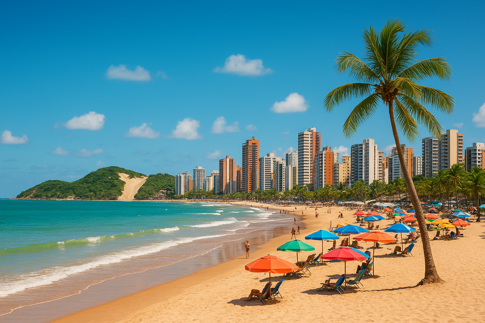
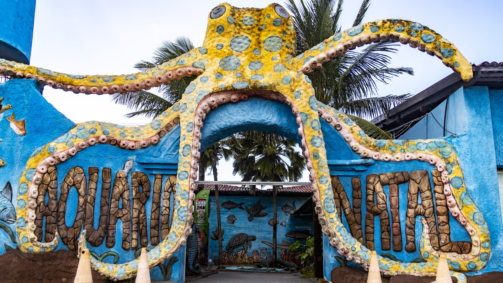
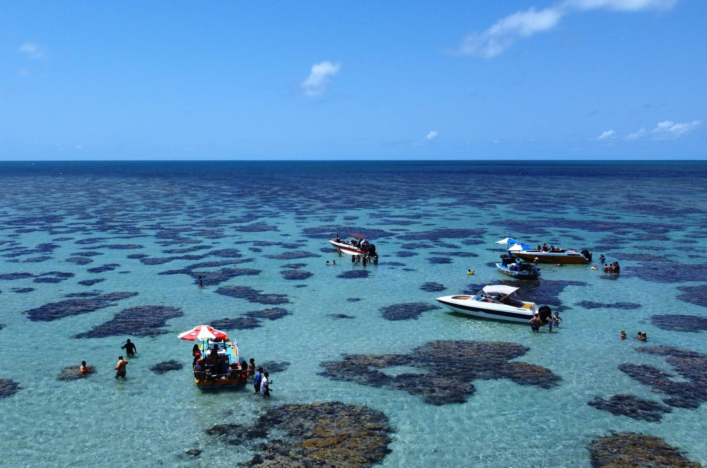

Sua próxima viagem:
Conheça Natal RN

Natal, a joia ensolarada do Rio Grande do Norte, oferece de tudo, desde praias paradisíacas e dunas impressionantes até tradicionais sabores da culinária nordestina. Aqui, exploramos uma das cidades mais encantadoras do Brasil e descobrimos suas belezas naturais, sua cultura acolhedora e suas experiências inesquecíveis.
Para os amantes de história
Descubra 3 destinos imperdíveis em Natal
As atrações de Natal vão desde praias paradisíacas e dunas impressionantes até construções históricas que revelam a importância da cidade ao longo dos séculos. Esta capital litorânea tem muitas coisas para fazer o ano todo — as famílias podem aproveitar passeios de buggy pelas dunas, visitar aquários e curtir praias tranquilas, enquanto os amantes da natureza podem explorar lagoas cristalinas, falésias coloridas e mirantes com vistas panorâmicas. Os cenários naturais que cercam Natal, como o Morro do Careca, o Parque das Dunas e o litoral potiguar, encantam visitantes e rendem fotografias inesquecíveis.

1. Morro do Careca
O Morro do Careca é um dos principais cartões-postais de Natal, localizado na Praia de Ponta Negra, uma das áreas mais famosas da cidade. Formado por uma grande duna cercada por vegetação, o morro se destaca pela sua beleza natural e pela vista privilegiada do litoral potiguar. Embora o acesso à duna seja proibido para preservação ambiental, é possível admirar sua paisagem da orla e aproveitar o cenário marcante entre o mar e a natureza.
Bom para:
- História

2. Aquário de Natal
O Aquário Natal é uma das atrações mais conhecidas da capital potiguar. Ele está localizado na Redinha Nova, próximo ao litoral norte da cidade, e oferece aos visitantes a oportunidade de conhecer diversas espécies marinhas e animais da fauna brasileira. O espaço conta com tanques de peixes, tubarões, cavalos-marinhos, além de áreas dedicadas a répteis e outros animais, sendo uma opção interessante para famílias e amantes da natureza.
Bom para:
- História

3. Parrachos de Rio do Fogo
Os Parrachos de Rio do Fogo, localizados no litoral norte do Rio Grande do Norte, estão entre os cenários naturais mais encantadores próximos a Natal. A região é formada por piscinas naturais de águas cristalinas e recifes de corais, ideais para banho, mergulho e observação da vida marinha. Durante a maré baixa, os visitantes podem fazer passeios de barco ou lancha até os parrachos e aproveitar uma experiência tranquila em meio ao mar azul-esverdeado do litoral potiguar.
Bom para:
- Casais
- Famílias
- Orçamento
As melhores coisas para fazer em Natal mostram a reputação da cidade como um dos destinos turísticos mais encantadores do Nordeste brasileiro. Conhecida por suas praias paradisíacas, dunas impressionantes e clima ensolarado durante quase todo o ano, a capital potiguar oferece uma atmosfera acolhedora e cheia de belezas naturais. Ao visitar Natal, você poderá experimentar uma mistura única de cultura, gastronomia regional e paisagens inesquecíveis.